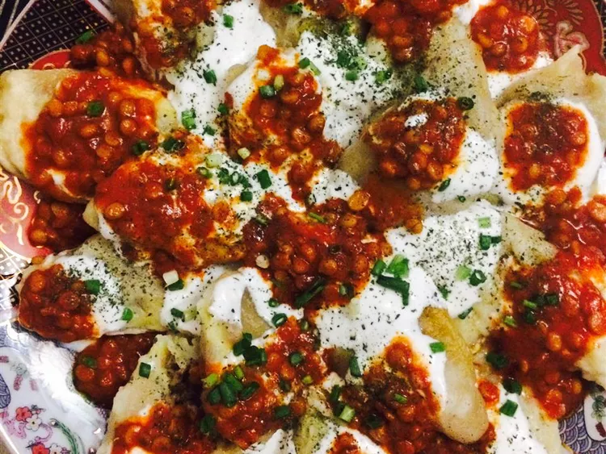

Mantu

Ingredients
- ¾ cup plain yogurt
- 1 teaspoon chopped fresh mint leaves
- 2 cloves garlic, crushed
- 1 pound ground beef
- 1 cup water
- ¾ teaspoon salt
- 1 teaspoon ground black pepper
- 1 ½ teaspoons ground coriander
- ½ teaspoon ground cumin
- 26 wonton wrappers
- 1 tablespoon tomato paste
- ⅛ teaspoon red pepper flakes
- 2 tablespoons water
- ½ cup dried yellow split peas
- ⅛ teaspoon red pepper flakes
- 1 teaspoon ground coriander
- 1 ½ cups water
Steps
- In a small bowl, stir together yogurt, mint, and garlic. Refrigerate.
- In a large skillet over medium heat, cook ground beef and onions until meat is browned, stirring occasionally to crumble; drain fat. Stir in 1 cup water, carrot, salt, black pepper, 1 1/2 teaspoons coriander, and 1/2 teaspoon cumin; simmer uncovered for 30 minutes or until water evaporates.
- Lay out wonton wrappers on aluminum foil. Mound two large spoonfuls of beef mixture in the center of one wrapper. Dip a finger in water and trace it around all four edges. Lay a second wonton wrapper on top of the first, and press on all edges to seal. Roll up the edges to create a round, hat-shaped ravioli. Repeat, making 13 ravioli.
- Place ravioli in steamer and steam 40 minutes.
- Meanwhile, mix together the yellow split peas, 1/8 teaspoon red pepper flakes, 1 teaspoon coriander, 1/4 teaspoon cumin, chicken bouillon, and 1 1/2 cups of water in a saucepan. Bring to a boil, then simmer over medium-low heat for about 45 minutes, or until it reaches a thick slurry-like consistency.
- Meanwhile, in the large skillet, mix remaining beef mixture with 2 tablespoons water, tomato paste, and 1/8 teaspoon red pepper flakes. Simmer over low heat until liquid has evaporated, about 10 minutes.
- To serve, spread yogurt on a serving plate. Top with ravioli, and top again with split pea mixture. Finally, top with tomato and beef mixture. Serve immediately.